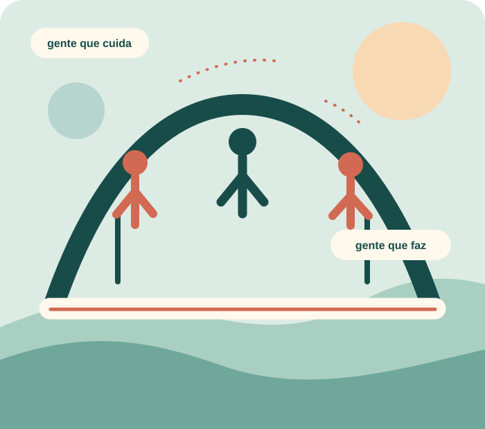

Educação
Informações para entender melhor os temas de saúde e oncologia.
O Projeto Ponte está sendo criado para reunir informação sobre câncer, organizações, profissionais e iniciativas. Um espaço para encontrar apoio, aprender e participar.

Encontrar apoio e informação sobre câncer nem sempre é simples. O Ponte quer facilitar essa busca e mostrar o trabalho de quem já atua nessa área.
O Portal VPM organiza a plataforma e acompanha as relações entre participantes, organizações e empresas. Cada pessoa vê o que faz sentido para a sua forma de participar.
Veja como a experiência funciona ↗Informações para entender melhor os temas de saúde e oncologia.
Aproximação entre pessoas, organizações e projetos.
Um lugar para mostrar o trabalho de quem atua na causa.
Aprendizado e apoio para fazer projetos crescerem.
Teste a busca com os perfis abaixo. São exemplos fictícios para mostrar como o diretório poderá funcionar.
A cidade da sede não define, sozinha, onde uma organização atende. Por isso, a abrangência aparece separadamente em cada perfil.
Veja como os conteúdos poderão ser organizados. Os cursos e as jornadas ainda não estão disponíveis.
Um ponto de partida para buscar respostas em fontes confiáveis.
Estrutura demonstrativaUma jornada para apoiar a organização em suas decisões do dia a dia.
Estrutura demonstrativaConversas sobre a escuta de pacientes e familiares no atendimento.
Estrutura demonstrativaA ideia é reunir vídeos, atividades e acompanhamento em um só lugar. Nesta versão, os conteúdos são apenas exemplos.
ONGs, empreendedoras e comunicadores poderão mostrar seus projetos aqui. Os três exemplos abaixo são fictícios.
Encontros para ouvir famílias e trocar informações durante o tratamento.
Projeto de organização · Belo Horizonte, MGProdutos para trazer mais conforto ao dia a dia de quem está em tratamento.
Iniciativa de empreendedora · Salvador, BAHistórias e conversas sobre diagnóstico, tratamento e vida depois do câncer.
Perfil de comunicadora · Recife, PEUma empresa pode apoiar a plataforma, patrocinar uma iniciativa ou realizar um projeto com a rede. Marcas reais só aparecerão aqui com autorização.
Apoiam o Projeto Ponte ou iniciativas ligadas à causa.
Financiam projetos, campanhas ou jornadas específicas.
Já desenvolveram iniciativas em parceria com o projeto.
Escolha um perfil para ver como poderá ser sua área no Ponte. Esta é uma demonstração: não há login nem dados reais.
Seus dados precisam de cuidado. Cada informação terá uma finalidade e um acesso definido. Este protótipo não recebe nem guarda dados.
Esta versão ajuda a testar a navegação e ouvir quem vai usar a plataforma. Antes de abrir cadastros reais, precisamos desenvolver a segurança e validar as regras de privacidade.